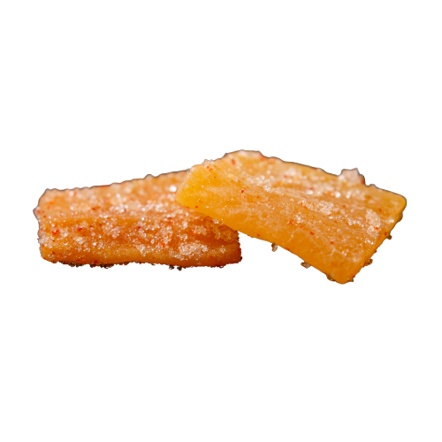

Purpose and Vision
This site was originally meant to be a bare-bones portfolio site to show potential employers that I could make maps and do spatial analysis projects. However, in the process of putting this site together (as well as planning and attempting to execute my various project ideas), it's become much more than a simple portfolio. Now, don't get me wrong: potential employers are still welcome! But this is much more about showcasing my learning, creative and intellectual pursuits, and presenting them to a wider audience (who are hopefully interested in more than just applauding skilful demonstration of my technical skills). I want to use this site as a window into my engagement with whatever parts of the world (and her people) catch my eye and mind - spanning from air pollution trends over the years to my ever expanding carto-research project on the Iliad and its world (it's like a balloon expanding inside my brain and I'm hoping I'll be done before it pops. Fingers crossed).
I want this site to provide a multi-media experience, where my output and your engagement can take many forms. That means you can look forward to: beautiful, artistic maps to illustrate my historical or literary projects; interactive web maps and apps that provide detailed and dynamic spatial information as well as allowing for collaboration through participatory web GIS projects like my mapping joyscapes web app. I want this to be all that and more! So much more. Because I also want to write and share my attempts at sustained, long-form dialogue for those of us who still enjoy reading nuanced and sometimes myopic (as in, hyperspecific in its focus) explorations of various topics.
So, my vision: present a platform that allows others to experience, appreciate, and engaged with the way I see and love the world.
Some other notes:
I don't want to just give you a product that is polished - I'm a novice when it comes to a lot of the tasks I've taken on (or plan to take on) and I want others to know how I stumble and stutter my way through some of my work - invite into the process so you may have insight into how someone like me learns. I want to show you the bare frameworks that lead to beauty, which is why you're going to see so many interactive knowledge lists. These will be project-specific (essentially a bibliography, e.g.interactive Iliad reading list) as well as broadly related to my personal experiences and tastes (e.g. Digi-shelf and Time-rope readings). I want to always provide clarity around what I draw on and my methodology, so that you may be inspired to learn and create as well!
This is just a small part of my journey with the sublime; that feeling and experience that arises from the ineffable connection between the self and the outside world. I want you, the user, the reader, the map contributor, to go beyond consumption. This is why the words engagement and engage appear often enough to feel innumerable on this site and in my writing. My work, as you will encounter on the site (and beyond) is a part of me, and I wish, to the best of my abilities, to reach out and get you to think, interact, touch, grasp some of me in a purposeful and almost visceral manner. Soul to soul, if we're being poetic.
In the era of short-form "content", made to be consumed without thought or much demands on the audience, I want to give myself and you more. I don't want to be cotton candy, one taste and gone. I want to linger, to delight, even irritate your palate in the way of spicy candied mangoes. I hope my work invigorates you.
Interests
I love all things to do with geography - human, physical, metaphysical (joking!). I keep up with developments in digital spatial realm, research on habitat destruction, resource management, political ecology, feminist geography, land use planning, climate resilience; the whole gamut. You should hopefully see many more projects related to my academic and professional experiences in the future.
A list of more of creative and personal interests include: Web GIS (& dev in general), literary & historical cartography, art, data analysis and research projects, beautiful and interactive data visualisations, community engagement and education, women's history and present material conditions, history, historiography, poetry, literature, non-fiction ecological pieces, writing, experiential learning, environmental phenomena (nature!🤟!), planning, urban safety, participatory and citizen science/research. The joy of knowing, of learning when you are wrong so you always endeavour to know the truth.
Skills
🧠 GIS (ESRI, Open-Source and Web GIS: QGIS, Leaflet, Geopandas, etc.,) 🧠 Database management (PostGIS, SQL) 🧠 Data collection, visualisation and analysis (Tableau, Excel, Blender etc.,) 🧠 Essay & Report Writing 🧠 Research 🧠 Communication 🧠 Programming [HTML/CSS (I am aware there is controversy over whether or not HTML is a programming language, but please know I am not actually a comp-sci person and leave me be), Javascript (although this is very rudimentary), Python & MATLAB for automation of data analytics, etc.] 🧠 Knowledge of legal frameworks and environmental regulations etc. 🧠 ESG expertise 🧠 Graphic Design (Canva, Figma)
Positionality and Background
This section is meant to situate myself so anyone who wishes to evaluate my work may understand where I'm coming from and thus be more critical in your ability to assess my approaches and analyses. I'm a geography and environtment (and resources and sustainability) graduate, which predisposes me to think spatially & to care about the environment and also know that climate change is real and must be reckoned with. A lot of my work flows from this source. My geog&env education also means that I'm not a specialist in any other subject or topic that I will or already have chosen to dive into. However, as much as I am learning as I go, I am incredibly advantaged by my university training in interdisciplinary methods and subject-matter (shout out to U-Waterloo's ERS program!). I'm a critical thinker and I am able to keep up with material as well as undergraduate students in many fields. I'm not trying to brag, just trying to explain that I am dedicated and read a lot and know how to evaluate knowledge for reliability and validity (or accuracy or precision in GIS) even when it's "outside my wheelhouse".
I am also a 🥁🥁🥁🥁 (drumroll) woman. I'm not bringing this for identity politics' pointscoring, but because many (perhaps most) of my research interests have been shaped by (materialist) feminist principles and philosophy. So, if you're wondering why there's so much emphasis on the "woman question" in projects you may not expect to see it, this is why.
I am slightly hobbled by my academic training because I am biased towards sources that are institutionally authorised - traditionally published books (preferably by subject-matter experts), academic journals, etc. But I know that good knowledge and writing exists outside of the academy and that I must endeavour to read more from "lay people" and other citizen researchers (i.e. "amateurs"). This is just the blindspot I have right now, and I welcome suggestions and recommendations to remedy this.
Possibly the most important disclaimer: My life's experiences, intellectual training, and belief in artistic practice as a necessity for well-being means that I find it distasteful to use AI for most creative purposes. It's the difference between painting and being a patron who is very hands-on with their instructions for painters. I prefer to be the painter, I suppose. So, I will endeavour that the art (writing, design, the little drawings and graphics) you encounter comes from me. My mind, my hands, my time. Not prompts. However! I did use AI assistance in developing this website. I did my best to actually learn as I went, instead of blind generating the code & copy-pasting it whole, but yes, I am guilty of that. Although I feel like less and less people are suspicious or disapproving of the use of "AI" anyway. Still the disclaimers and disclosures must be made.